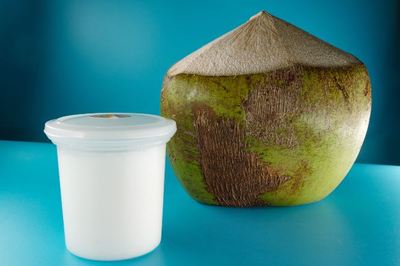

Can Dogs Have Coconut Milk?
Can Dogs Have Coconut Milk?
Yes, dogs can have coconut milk but it has to only be in small amounts. Coconut milk contains a lot of fat and other substances that dogs lack. Dogs do not produce the enzyme to digest lactose properly. This causes them to have diarrhea after having too much milky products.
Many pet owners who avoid dairy products in their own diets are concerned about whether or not dogs can have coconut milk in theirs. This article will explore the truth behind these concerns and offer some suggestions for both short-term use and longer-term supplementation with coconut milk.
While some dogs can have coconut because it is not technically an animal product, speak to your vet before introducing any new foods into your dog's diet. If you have a small breed dog or senior pooch, talk with your vet before giving them coconut anything at all.
What is coconut milk?
Coconut milk is the liquid found inside the coconut but it can also be made up from soaking grated coconut meat in hot water. This will result to a sweet-tasting white cream known as coconut milk. In many countries, especially in Asian countries, both types are used interchangeably. In Jamaica, both are also used frequently in many recipes. Jamaican's main dish on Sundays is Rice, Peas, and Chicken. Coconut milk is added to the rice when cooking to add a great flavor.
This wonderful drink has a texture between whole milk and cream but with more flavor. Some say that it even tastes like popcorn.
Coconut Milk Benefits & Uses for Dogs
Coconut is a popular food used in many recipes, but it's also beneficial and safe for your dog when fed in moderation. Coconuts have many nutrients to offer both humans and dogs. The flesh of coconut is also beneficial for dogs' digestion since it absorbs water in the stomach and helps with hydration . This is especially important for older dogs because dehydration can cause aging related issues such as arthritis.
Below will be a list of some of the nutrients present in coconut milk.- Carbohydrates
- Protein
- Healthy Fatty Acids
- Vitamin C
- Choline
- Potassium
- Magnesium
- Manganese
- Iron
- Selenium
- Calories
- Calcium
- Vitamin E
- Iron
- Copper
- Phosphorous
- Lauric acid
Carbohydrates are the main source of energy for your dog. The carbohydrates in coconut are mainly made up of glucose and sucrose molecules. Coconut contains more than 3 times the amount of carbohydrates found in cow's milk. You can use coconut as an option to help with dogs that have allergies to beef, being lactose intolerant or just plain finicky! Coconut has a lot less lactose and is easier for them digest so protein-wise it's better than other dairy options.
Protein in coconut milk is a major component in helping your dog get the nutrients they need. Coconut contains more protein than regular milk and it also has less lactose. The protein quality, plus the other vitamins such as vitamin C and E along with significant amounts of B Vitamins can help suggest that it aids in digestion support for dogs. Protein is essential to keep your dogs metabolism going strong all day long.
These include omega 3 fatty acids that have been proven to benefit humans but are also good for dogs! They promote healthy skin and coat, brain health, reduce inflammation, improve heart health and so much more. Beneficial fats are important for overall health so you may want to consider adding coconut into your dog's diet just for this reason.
This vitamin is a great antioxidant. Every dog needs antioxidants and they are necessary for the immune system to stay healthy and balanced. Coconut milk contains 2.8 milligrams of vitamin C per 100 grams which is more than most other foods, therefore making it beneficial for your dogs health and longevity.
Choline is needed for the maintenance of normal muscle function as well as the production and repair of cells, including those found in muscles. The brain requires choline to produce acetylcholine which is needed to transmit impulses from one cell to another.
Choline can also be converted into a nutrient called phosphatidyl-choline which helps keep your dog's liver healthy.
Potassium will help promote a healthy heart rate, digestive system, and nerve activities. Your dog will be less likely to suffer from seizures or even heart attacks when his potassium levels are consistently high throughout the day. Coconut milk contains 39 milligrams of potassium per 100 grams.
Magnesium is a component of many organic compounds including chlorophyll and can be used by the body for hundreds of different processes such as helping to maintain a healthy heart, preventing bones from becoming brittle, regulating blood pressure, keeping muscles strong. Coconut milk contains 37 milligrams of magnesium per 100 grams which is a good amount of the required daily intake. This is great for for your dog as it will help them to relax and unwind.
Manganese can help your dog's immune system to work properly as well as keeping blood sugar levels steady throughout the day. Manganese has been shown to decrease oxidative stress in animals exposed to high amounts of oxygen free radicals. Coconut milk contains 2.2 milligrams of manganese per 100 grams providing less than 2% of what is needed daily by your dog.
Iron helps with the development of your dog's red blood cells and the removal of toxins from their body. One hundred grams of coconut milk contains 0.28 milligrams less than 90% of the iron which is necessary for a large sized dog in one day.
Selenium is one of the many antioxidants present in coconut milk. This nutrient is important in the liver and thyroid functions. It also protects your dog's cells from getting damaged by free radicals. 100 grams of coconut milk contains 0.6 milligrams for every hundred grams.
Free radicals are molecules that contain oxygen and are often found in fats. Free radicals, when they concern your dog, are dangerous and destructive molecules that can attack tissue and cause cell mutations. Free radicals should be avoided by your dog at all times.
Calories are great for your dog as it provides them with energy and helps them to relax. Coconut milk contains 230 calories per 100 grams whereas the recommended daily intake for a 30 to 60 pound adult dog is only 250. This means that coconut milk contains 13% more than required by your pet in one day.
Calcium is important for the development of your dog's bone structure and essential for their growth. One hundred grams of coconut milk contains 16 milligrams per 100 grams.
This vitamin is responsible for many things in one's body. One of the more prominent abilities is to maintain your immune system and keep it from being destroyed by free radicals. Coconut milk contains 0.15mg of vitamin e for each 100g.
Iron helps with the development of your dog's red blood cells and the removal of toxins from their body. One hundred grams of coconut milk contains 1.6 milligrams for every 100 grams.
Copper is present in coconut milk as an essential mineral. It plays a role in the development and maintenance of strong bones, blood vessels and connective tissues such as skin. One hundred grams contains 382 milligrams less than 83% of what is needed daily by a large sized dog in one day.
Phosphorous helps to build bone mass and assists with energy storage into muscle cells and other body tissues; so it's always good to have this nutrient in your system at all times. Dogs benefit greatly from phosphorous as well, especially when it comes to cardiovascular health.
This is a medium chain fatty acid that is very easy for your dog's body to digest. This makes coconut milk a great choice for dogs with digestive problems, food allergies or just picky eaters in general. The high level of protein and the low amount of natural fats means that this product will not put stress on the kidneys like most other animal products would.
Table of dried coconut meat vs raw coconut meat
| Raw coconut meat | Dried coconut meat | |
| Calories | 354 | 650 |
| Magnesium | 8% of DV | 23% of DV |
| Potassium | 10% of DV | 16% of DV |
| Protein | 3 grams | 7.5 grams |
| Manganese | 75% of Daily Value (DV) | 137% of DV |
| Carbs | 15 grams | 25 grams |
| Iron | 13% of DV | 18% of DV |
| Phosphorus | 11% of DV | 21% of DV |
| Fat | 33 grams | 65 grams |
| Copper | 22% of DV | 40% of DV |
| Selenium | 14% of DV | 26% of DV |
| Fiber | 9 grams | 18 grams |
Coconut Milk vs. Dairy
Dairy products are usually avoided by those who attempt to follow a vegan or vegetarian diet due to lactose intolerance issues. Coconut milk can be used as an alternative to dairy as it does not contain lactose. Coconut milk has a similar texture and consistency when compared to dairy and can be used in everyday recipes that may call for cow's milk or other types of animal-based milk.
There is more fat in coconut milk than regular milk. In fact, there are four times the amount of saturated fats in a typical serving of coconut milk than that found in cow's milk. However, vegans and vegetarians who use coconut milk as a dairy substitute are more concerned about the lack of lactose rather than about the high fat content.
Coconut Milk vs. Cow's Milk
Cow's milk is somewhat easier on your dog's digestive system, but also has significantly more cholesterol than coconut milk, which is great news if you are looking for a substitute that will help keep your dog healthy with the cardiovascular benefits it brings about. However, coconut contains fat-soluble vitamins that are beneficial for brain function and could increase cognitive ability in older dogs.
How much does coconut milk cost?
Depending on where you live and what brand you choose, one can usually ranges from $0.99-$3.75 per can or carton. Most brands aren't exactly cheap either because they are high quality products. Coconut milk is typically sold in cans or cartons at most grocery stores, depending on availability; however it's always best to buy organic whenever possible to avoid pesticides.
Effects of coconut milk on Weight and Metabolism
Coconut and coconut milk have been both known to help with weight loss and a healthy metabolism. Furthermore, coconut milk is high in potassium, which helps to boost your dog's heart rate and fight fatigue while also helping manage blood pressure. Coconut milk may even help with the absorption of other nutrients by the body. As such, it is often used as a base for homemade dog food recipes since it helps dogs maintain their weight through consumption of fewer calories. When you introduce coconut milk into your dog's diet, it is important to monitor their weight and adjust accordingly, especially if your dog has a history of being overweight or obese. If you have a dog with kidney issues, avoid coconut milk as the extra potassium may be harmful in large quantities.
Electrolyte balance with coconut milk for dogs
Coconut milk can help with the balance of potassium (a mineral) and sodium (an electrolyte) to ensure a healthy dog's heart and nerve health. It can do this by providing the balance of these two key nutrients instead of high amounts of either, which is often found in pet foods that include ingredients like meats or chicken broth. Coconut milk contains sodium but it also includes an abundance of potassium.
Canned coconut milk for dogs' diets may be beneficial in promoting:- Healthier skin
- Better hydration
- Promotes gastrointestinal health
- Digestive health
- Healthy brain development
- Antioxidants Present
A dog's skin and coat is a good indicator of overall health. Coconut milk can help improve the skin and reduce dryness and itchy skin.
Mixing coconut milk into your dog's water or food may keep him from getting dehydrated since coconut milk contains 85% water in the form of fat molecules, which are easily digested by dogs and converted into energy.
Coconut milk will support your dog's digestive health by encouraging the growth of helpful probiotic microbes. Probiotics are "friendly" bacteria that live in our gut and help to break down food, synthesize vitamins, and regulate immune function. They also have anti-inflammatory properties that can play a major role in minimizing stomach upset. This is great news for pet owners as they can help to alleviate symptoms associated with diarrhea, gas, constipation, and other stomach issues.
Coconut milk also helps promote digestive health for dogs with pancreatitis, diarrhea, colitis (inflammation of the colon), inflammatory bowel syndrome (IBS) or irritable bowel syndrome (IBS). It does this because there are fatty acids in coconut that suppress bacterial infections like E-coli that causes diarrhea, as well as other harmful organisms in the intestinal tract.
Brain development is one of the most important stages in your dog's life. Most owners will be anxious to ensure that their growing puppy or adolescent dog is getting all the right nutrients they need for healthy brain function. As well as lauric acid, coconut milk offers a good source of choline, which aids in the development of memory and reasoning ability. The same medium chain length fats also help increase blood flow to the brain, improving alertness and focus.
Coconut milk contains antioxidants that is known to protect against cancer and heart diseases. Coconut milk contains the antioxidant lauric acid, a substance that helps fight bacteria in your dog's digestive tract. The vitamin E present in coconut milk prevents circulatory problems and also protects from degenerative disorders associated with aging.
In order to achieve the health benefits of coconut milk, ensure that only full-fat coconut milk is used – not the reduced fat or skim versions - since it's the fats in the milk that help reduce inflammation.
Conclusion
Coconut milk can be good for your dog as it contains a variety of nutrients. However, there are a number of factors you should consider first before allowing your pooch to indulge in nature's dairy alternative. If you want to know if your dog is lactose intolerant, talk to your vet who will be able to evaluate the impact that coconut milk has on his health. You should also talk to a professional before feeding large amounts of unprocessed or raw coconut meat as this could lead to major problems with your dog's digestive system. Finally, remember that allowing your canine companion access to any food without supervision could result in unhealthy weight gain or other problems with their health.